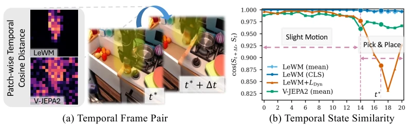
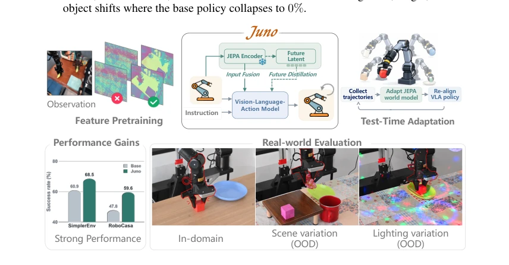
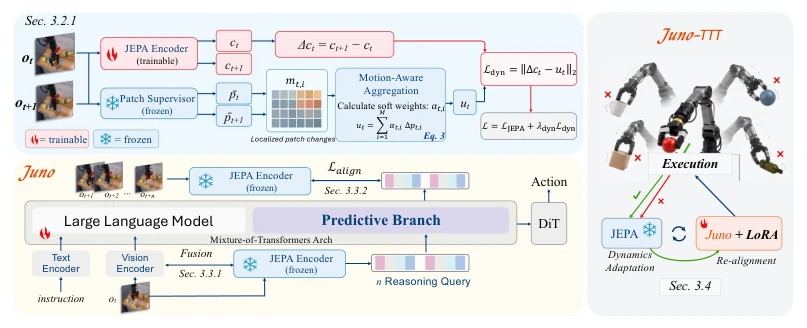
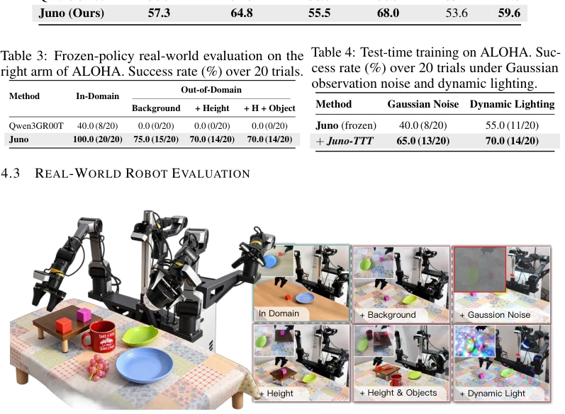
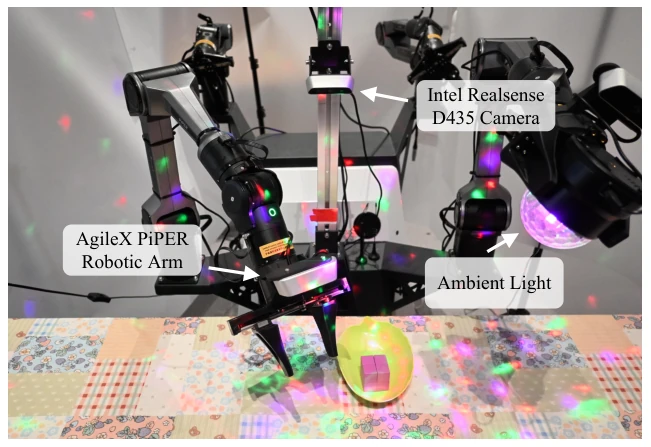
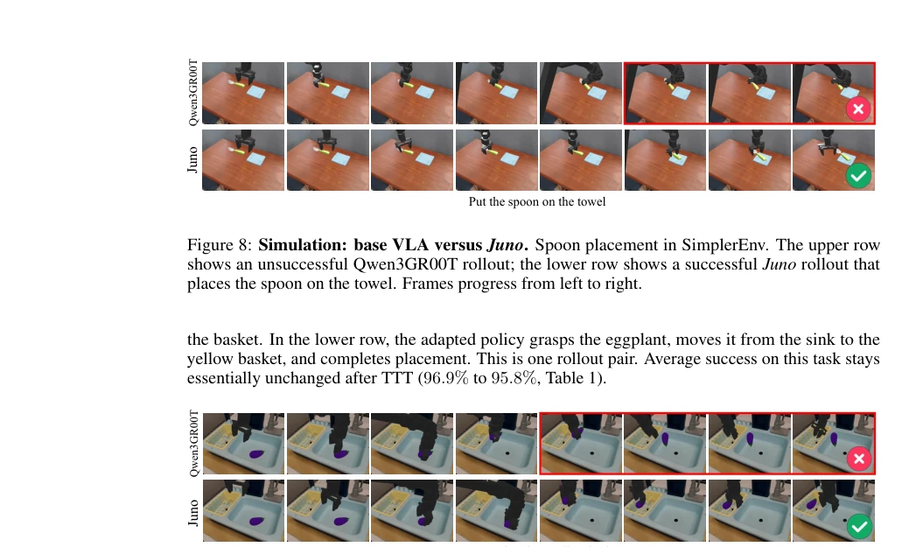
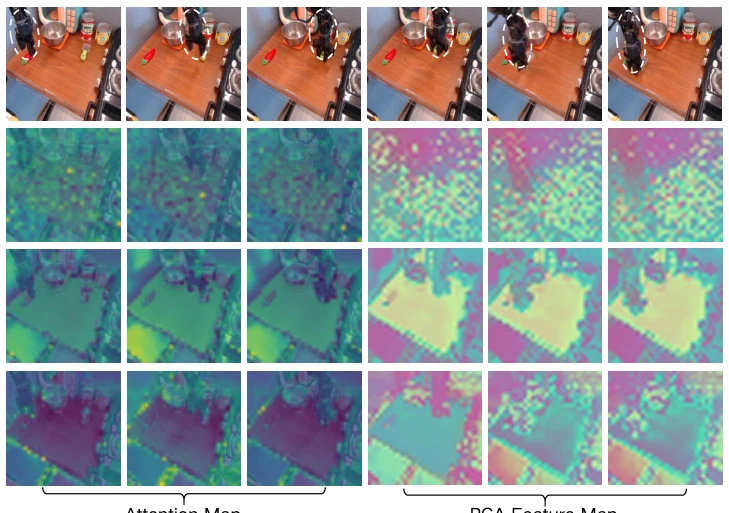
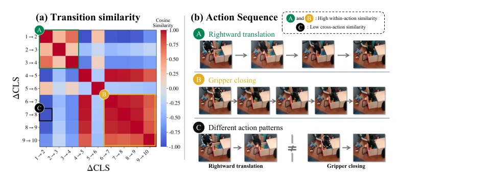

Juno attempts to tame prediction latent variables, essentially equipping a VLA with a JEPA facade. The highlight lies in that the dynamic CLS loss solves the problem of CLS tokens being insensitive to local motion; utilizing failure trajectories to update the dynamics model during the TTT stage is also clever, after all, although failure actions cannot teach the policy, they can teach world dynamics. However, real robot experiments rely on only 60 demonstration data points, and TTT is also an offline protocol, raising doubts about generalization. Moreover, the term "tame" is slightly exaggerated; the advantage of JEPA in VLA still needs verification in more long-tail scenarios. Overall, it is a robust engineering improvement, but theoretical breakthroughs are limited, possibly just changing the pretraining data source.
研究动机Motivation
现有 JEPA 预训练多基于互联网视频，与具身控制不匹配 (Assran et al., 2025)。VLA 中预测目标常干扰控制梯度，未来状态未必可解码 (Sun et al., 2026)。部署时分布偏移会导致冻结教师模型校准失效，而现有 TTT 方法假设教师可靠 (Zhang et al., 2026b)。Juno 旨在统一这三个阶段的预测潜变量利用，解决控制对齐、梯度干扰及教师校准问题，提升策略在分布偏移下的鲁棒性。特别是利用失败轨迹作为动力学监督，打破了 TTT 依赖成功数据的惯例。
Existing JEPA pretraining is mostly based on internet videos, which does not match embodied control (Assran et al., 2025). Prediction targets in VLA often interfere with control gradients, and future states are not necessarily decodable (Sun et al., 2026). Distribution shift during deployment causes frozen teacher model calibration to fail, while existing TTT methods assume the teacher is reliable (Zhang et al., 2026b). Juno aims to unify the utilization of prediction latent variables across these three stages, solving control alignment, gradient interference, and teacher calibration issues, enhancing policy robustness under distribution shift. Especially utilizing failure trajectories as dynamics supervision, breaking the convention of TTT relying on successful data.

Figure 2: (a) Patch-wise temporal cosine distance between frames t⋆and t⋆+∆t for LeWM and V-JEPA2. (b) Temporal state similarity cos(ct, ct+∆t) over the episode, spanning slight motion (t ≤14) and pick-and-place (t > 14). LeWM (CLS) stays nearly constant, whereas LeWM+Ldyn becomes sensitive during pick-and-place; mean-pooled baselines are shown for reference.
The framework is divided into three stages. 1. Control Alignment Pretraining: Train JEPA on robot trajectories, introduce dynamic CLS loss, distilling patch-level motion weighted information into global CLS token, solving the problem of CLS diluting local changes. 2. Decoupled Prediction Inference: JEPA patch features are fused into VLA visual tokens, distilling future latent states through a decoupled branch to ensure predicted states are decodable into actions. This branch uses a MoT decoder, sharing causal attention with VLA but with independent parameters, retaining action generation capability while enhancing prediction accuracy. 3. Dynamics-Prioritized TTT: During deployment, utilize all trajectories (including failures) to update world model parameters, freeze the new teacher, and only use verified successful trajectories to realign the policy, avoiding failure actions contaminating the policy objective. This stage adopts LoRA adapters to update the policy, reducing overfitting risk.

Figure 1: We present Juno, a unified framework that makes predictive latents useful across the vision-language-action (VLA) lifecycle. Juno integrates control-aligned JEPA pretraining, visual feature fusion and decoupled future-latent distillation, and dynamics-first test-time adaptation that updates the world model before re-aligning the policy. It improves performance on SimplerEnv and RoboCasa and supports robust real-world manipulation under distribution shifts.

Figure 3: Overview of Juno. Top left: Dynamic CLS pretraining aligns CLS transitions with motion-weighted patch changes from a frozen JEPA supervisor. Bottom left: JEPA features enrich visual tokens, while a decoupled predictive branch distills future latent states to jointly guide action generation. Right: Test-time adaptation updates the world model using both successful and failed executions, then re-aligns the policy on verified successful executions. Flame and snowflake icons indicate trainable and frozen modules, respectively.
Evaluated on SimplerEnv and RoboCasa-GR1, baseline is Qwen3GR00T. Juno average success rate 68.5% (Sim) and 59.6% (RoboCasa), significantly better than baseline. In real robot experiments, success rate remains 70%-75% under background/height/object shift, baseline drops to zero. TTT further improves Sim to 72.7%, real lighting noise down to 70%. Ablation shows Fusion and MoT branch coupling is key, dynamic CLS loss contributes stable gain.

Figure 4: Real-robot setup and evaluation conditions. (a) AgileX Cobot Magic, an ALOHA-style platform; only the right PiPER arm is used. (b) Nominal and shifted conditions involving background, manipulation height, and objects for evaluating the frozen policy. (c) Gaussian observation noise and dynamic lighting conditions for test-time training, evaluated separately from the frozen-policy results.

Figure 7: Real-robot workstation with additional colored illumination. This lighting is used for dynamic-lighting test-time training, not for the frozen-policy columns in Table 3.

Figure 9: Simulation: Juno before and after TTT. Eggplant placement in SimplerEnv. The upper row shows a failed Juno execution before adaptation; the lower row shows successful placement into the yellow basket after TTT (Juno-TTT in the figure). Frames progress from left to right.
其他图片Other Figures

Figure 5: Spatial feature structure. Final-layer attention (left) and PCA of patch embeddings (right) for V-JEPA 2, LeWM, and our control-aligned encoder trained with the Dynamic CLS loss (Ours). LeWM focuses on the manipulation region, while Ours shows more concentrated attention along robot and object boundaries than LeWM. PCA is fitted separately on the same frames; colors are comparable only within each encoder.

Figure 6: CLS transition similarity across action patterns. (a) Pairwise cosine similarity between CLS transition vectors ∆ct = ct+1 −ct; warmer colors indicate higher similarity. The green block (A) covers rightward-translation transitions 1→2 through 3→4, and the yellow block (B) covers gripper-closing transitions 6→7 through 9→10. The black-outlined cell (C) contrasts 1→2 with 7 →8, illustrating low similarity across the two action patterns. (b) Corresponding observation sequences and the cross-action comparison; dashed white circles highlight the gripper region.